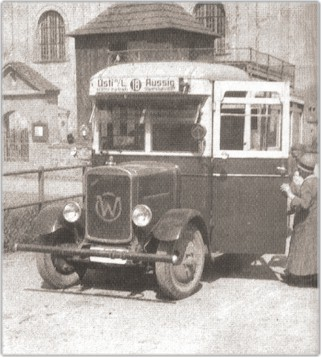
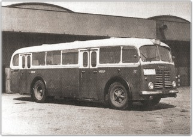
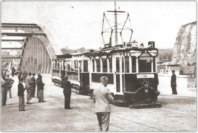
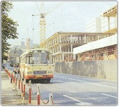
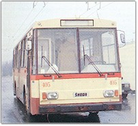

Jak se vozili naši dědové
 Pravidelnou městskou dopravu zavedlo město
Ústí nad Labem v roce 1899. Prvního července toho roku
byla uvedena do provozu elektrická pouliční dráha o rozchodu
1000 mm. Tramvaje vedly z historického centra do Krásného
Března, do Předlic, k dnešní poliklinice a na
Špitálské náměstí. Později byla síť rozšířena
o další tratě. Do Neštěmic se začalo jezdit až
v roce 1915. Byl to spoj č.5 a jezdil z Bukova, přes
hlavní poštu. Cena se pohybovala podle délky jízdy, nebo-li pásma.
Nejkratší pásmo stálo korunu,delší korunu dvacet, korunu
čtyřicet atd. Nejdražší jízda stála něco kolem tří
korun. Výhodu měly občané města,jelikož ti měli
slevu na jízdné, například místo koruny platili šedesát
dva haléřů, ale museli si koupit deset jízdenek
najednou. V letech 1912 až 1964 vozily tramvaje kromě
 cestujících i další suroviny, poštu, průmyslové
suroviny a uhlí. To lepší uhlí se vozilo na překladiště
v Neštěmicích, kde se dále nakládalo do železničních
vagónů, nebo přímo do vlečných člunů.Všeobecná
tendence k omezování tramvajové dopravy v padesátých a šedesátých
letech se ale nevyhnula ani Ústí, a tak byly všechny ústecké
tramvajové tratě během let 1954 až 1970 postupně
zrušeny a nahrazeny autobusovými linkami. V jubilejním 70. výročí
městské elektrické dráhy zbyl tramvajím již jen hlavní
tah
 z Trmic do Neštěmic (linka č.3
Trmice-Neštěmice) a několik krátkých úseků.
Na linku číslo 3 vyjela poslední souprava v sobotu 31.
ledna 1970. Městské autobusy však vyjely poprvé už 9. 11.
1929. Brzy obsluhovaly nejen vlastní město, ale také poměrně
vzdálené obce jako Adolfov, Jílové apod. Tyto meziměstské
linky převzala po skončení II. světové války
ČSAD.
Elektrická trakce byla obnovena až na sklonku
80. let. V průběhu sedmdesátých a osmdesátých  let
vzniklo v okrajových částech města mnoho sídlišť,
což si vynutilo zavedení mnoha nových autobusových linek. Ty však
nestačily rostoucí poptávce, a proto bylo rozhodnuto o
zavedení ekologičtějších trolejbusů, které by
nejzatíženější autobusové linky postupně nahradily. Neštěmice bylo jedno z posledních míst, kde byla
zavedena trolejbusová doprava a bylo to 28. 8. 1995. V dnešní
době se můžete dostat do Neštěmic několika
pravidelnými spoji. Jsou to linky 51( jede na Skalku), 57 (jede do
Mojžíře) , 58 (jede oklikou přes Krásné Březno a
končí též na Skalce),19 (rychlý spoj do města, kolem přístavu
a také kolem známé Matiční ulice a končící v Ryjicích)
a 101 (noční spoj).
 Ceny MHD zde neuvádím,protože se každou
chvíli mění a tyto informace nechť si každý kdo má zájem
získá na patřičných stránkách či úřadech.
Kromě MHD lze využít také taxi služby. Myslím si, že po
dohodě s řidičem je možné se dostat “taxíkem“
z centra do Neštěmic za rovných sto korun českých. Ceny MHD zde neuvádím,protože se každou
chvíli mění a tyto informace nechť si každý kdo má zájem
získá na patřičných stránkách či úřadech.
Kromě MHD lze využít také taxi služby. Myslím si, že po
dohodě s řidičem je možné se dostat “taxíkem“
z centra do Neštěmic za rovných sto korun českých.
Jízdní řád Neštěmic.
|